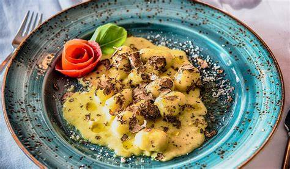
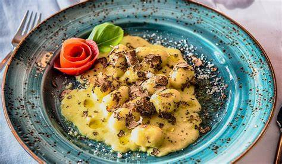

Lunch & Diner
Bij ons draait alles om heerlijke, voedzame en duurzame gerechten die je zowel lekker als goed doen. Al onze gerechten zijn 100% plantaardig, bereid met verse, seizoensgebonden ingrediënten, en hebben als doel om je smaakpapillen te verwennen en je lichaam te voeden. Of je nu op zoek bent naar een lichte lunch of een uitgebreid diner, je zult hier zeker iets vinden dat je hart sneller doet kloppen!
**Brusche a Tricolore** •
VOORGERECHT
€8,00
Geroosterd zuurdesembrood met
drie toppings: avocado-spread,
gegrilde paprika tapenade, en
tomaten-basilicum salsa
**Gefrituurde Ar sjok** •
VOORGERECHT
€8,50
Knapperige ar sjokblaadjes geserveerd
met huisgemaakte aioli van aquafaba
**Romige Pompoensoep** •
VOORGERECHT
€7,50
Fluweelzachte soep van biologische
pompoen met geroosterde pompoenpi en
verse kruiden


**Portobello Wellington** •
HOOFDGERECHT
€19,50
In bladerdeeg gebakken portobello
met duxelles van paddenstoelen,
geserveerd met seizoensgroenten en
rode wijnsaus
**Jackfruit Rendang** •
HOOFDGERECHT
€18,50
Indonesische curry van jonge jackfruit
met kokosrijst en gewokte groenten
**Gnocchi al Tartufo** •
€17,50
HOOFDGERECHT
Huisgemaakte aardappelgnocchi met
truffelsaus, gebakken paddenstoelen
en rucola
 
